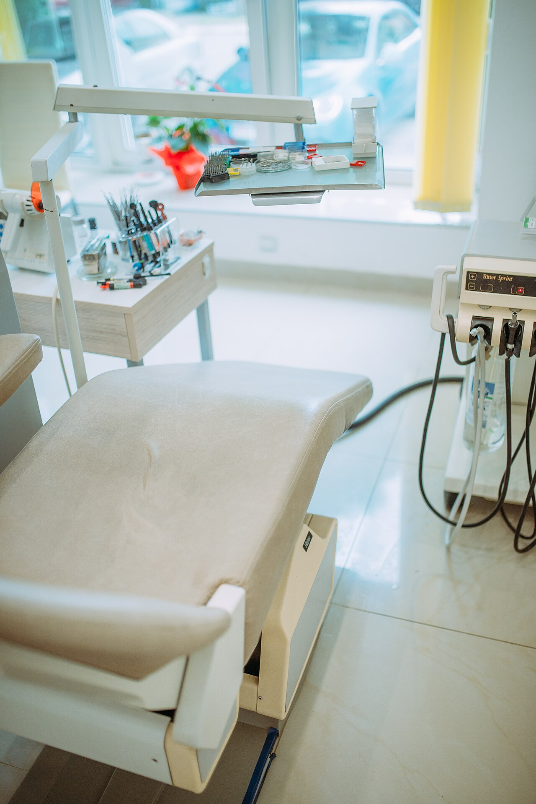
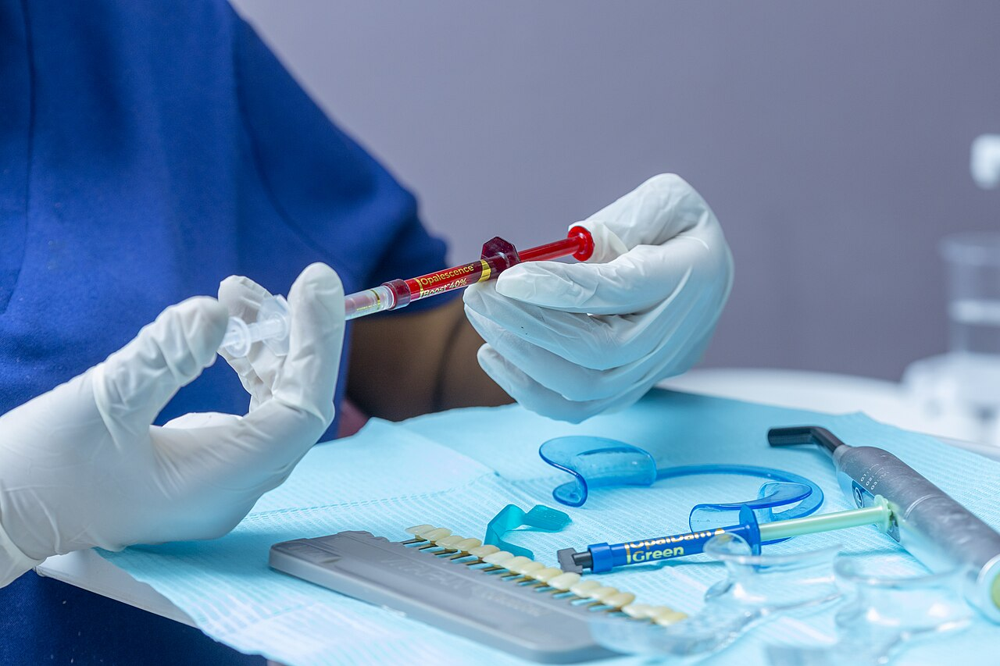
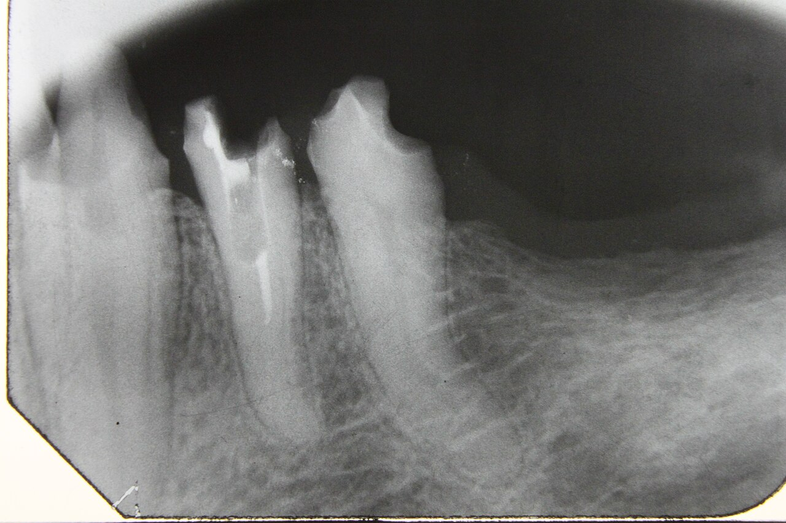
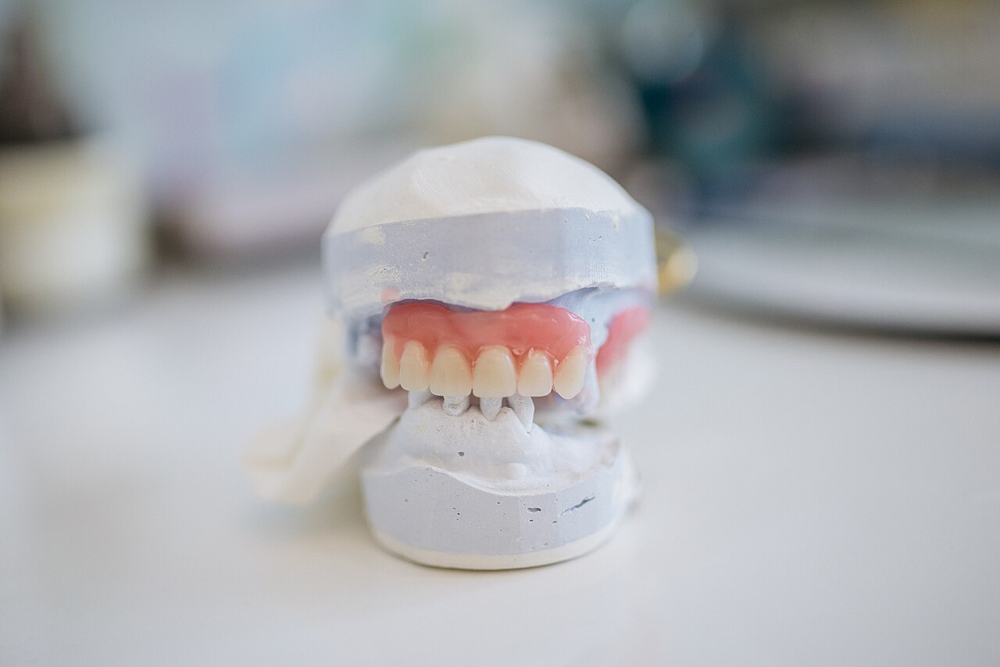
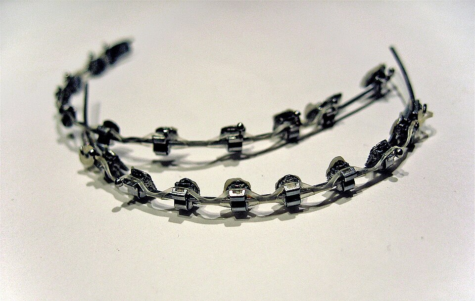
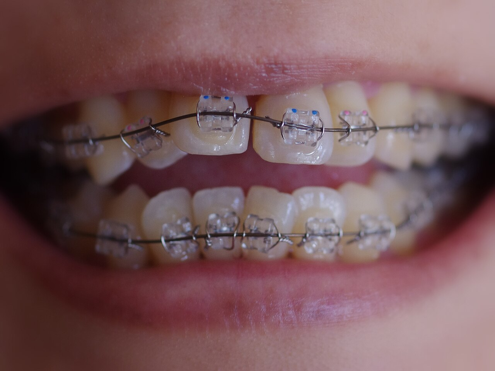
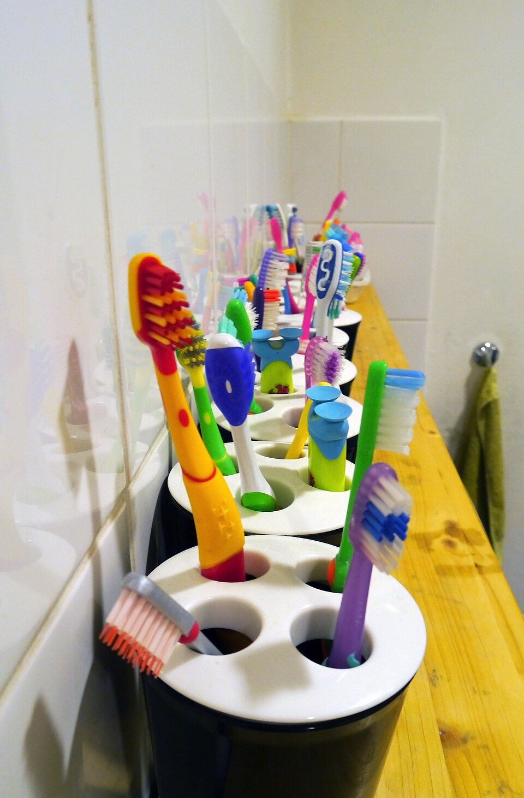
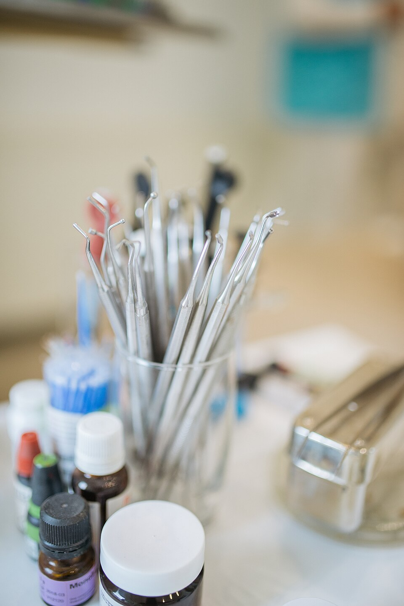
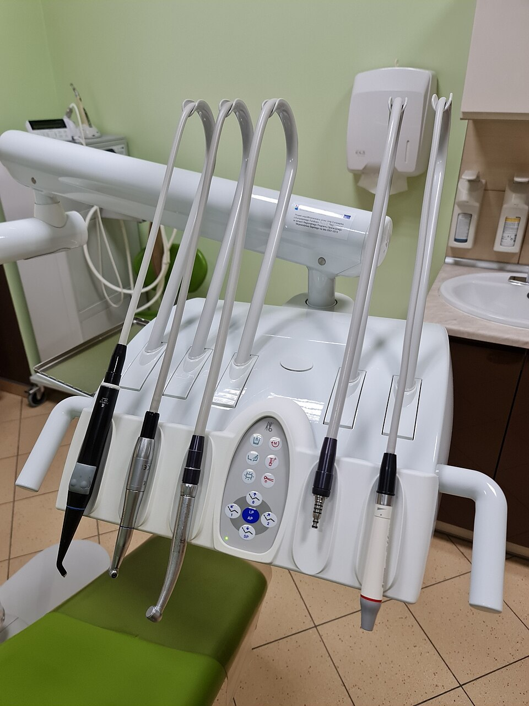

Consultorio dental en Tapachula
Limpieza, resinas, blanqueamiento, ortodoncia y urgencias en Los Laureles. La primera consulta cuesta $450 e incluye revisión y presupuesto.

Servicios dentales y precios
Precios en pesos mexicanos. El costo final de cada tratamiento te lo damos por escrito después de la revisión.
- Limpieza dental
Revisión, limpieza con ultrasonido y pulido.
$650 - Resinas
Empaste del color del diente, por pieza.
desde $750 - Blanqueamiento
En consultorio, con revisión previa de encías.
$3,900 - Ortodoncia
Brackets metálicos o estéticos, pago mensual.
desde $1,100 - Urgencias
Consulta por dolor, inflamación o una pieza rota.
$500

Tu primera cita en 3 pasos
Antes de cualquier tratamiento hay una consulta de revisión. Si empiezas tratamiento ese mes, su costo se descuenta.
-

Revisión dental pieza por pieza
Con espejo y explorador revisamos dientes, encías y resinas anteriores, y te decimos lo que vemos.
-

Radiografía dental, solo si hace falta
Si hay una caries escondida o una muela por salir, tomamos una radiografía y la revisamos contigo.
-

Plan de tratamiento y presupuesto
Sales con el orden de los tratamientos y el precio de cada uno, por escrito. Tú decides cuándo empezar.
Ortodoncia con brackets metálicos o estéticos
Un tratamiento suele durar entre uno y dos años, con una cita de ajuste al mes. Antes de empezar recibes el plan y el costo total por escrito.


Preguntas antes de la cita
Lo que más se pregunta al agendar. Cualquier otra duda, escríbela por WhatsApp.
¿Atienden urgencias?
Sí, de lunes a sábado. Escribe qué sientes y desde cuándo, y te damos el primer horario libre del día.
¿Qué llevo a la primera cita?
Una identificación y, si las tienes, radiografías anteriores. Si tomas algún medicamento, dinos cuál.
¿El blanqueamiento aclara las resinas?
No, las resinas conservan su color. Antes revisamos cuáles se ven al sonreír y te decimos si conviene cambiarlas después.
¿Puedo cambiar mi cita?
Sí. Avísanos por WhatsApp un día antes y te damos otra fecha.

Consultorio de la Dra. Lucía Tovenar
En Ardema atiende una sola dentista. La Dra. Tovenar hace la revisión, las resinas, los blanqueamientos y los ajustes de ortodoncia.
En cada cita te atiende la misma persona, que ya conoce tu historial y el plan que acordaron. Se atiende solo con cita.

Horario y ubicación en Los Laureles
Tapachula, Chiapas Ver la zona
- Lunes a viernes
- 9:00 a 19:00
- Sábado
- 9:00 a 14:00
- Domingo
- Cerrado
